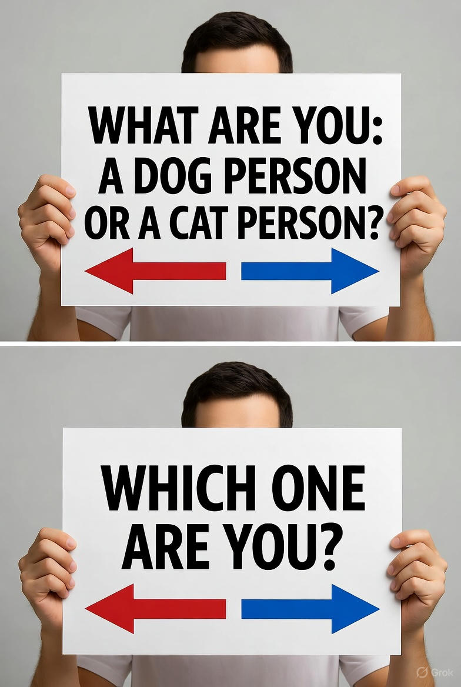

Ever found yourself in a heated debate over whether dogs or cats reign supreme? It’s practically a rite of passage for pet lovers! Whether you’re Team Woof or Team Meow, your preference says a lot about you, and let’s be honest, it’s a fun way to spark some friendly banter. So, grab a cup of coffee (or a pet treat), and let’s dive into the delightful divide between dog people and cat people.
The Dog Person: Loyal, Energetic, and Ready for Adventure
Dog people are the life of the party, or at least the ones always ready for a walk. If you’re a dog person, you probably thrive on companionship and love a good dose of chaos. Dogs are like furry cheerleaders, always hyping you up for a game of fetch or a spontaneous hike. Here’s what makes dog people special:
- You’re a Social Butterfly: Dogs demand interaction, and you’re happy to oblige. Whether it’s a trip to the dog park or a playdate with your neighbor’s pup, you love the social scene that comes with dog ownership.
- Routine is Your Jam: Dogs thrive on schedules, walk at 7 a.m., dinner at 6 p.m., belly rubs on demand. If you’re a dog person, you probably enjoy a bit of structure in your life.
- You’re Not Afraid of a Little Mess: Muddy paw prints? Drool on the couch? No problem! Dog people embrace the glorious mess that comes with their four-legged pals.
Fun fact: Studies suggest dog owners tend to be more extroverted and active. No surprise there, try staying introverted when your pup is begging for a game of tug-of-war!
The Cat Person: Independent, Curious, and a Bit Mysterious
 Cat people, on the other hand, are the cool, enigmatic folks who appreciate a pet that matches their vibe. Cats are the ultimate low-maintenance buddies, offering affection on their terms. If you’re a cat person, here’s what sets you apart:
Cat people, on the other hand, are the cool, enigmatic folks who appreciate a pet that matches their vibe. Cats are the ultimate low-maintenance buddies, offering affection on their terms. If you’re a cat person, here’s what sets you apart:
- You Value Independence: Cats are the kings and queens of doing their own thing. If you’re a cat person, you likely admire their self-sufficient swagger and don’t mind giving them space.
- You’re a Night Owl: Cats love zooming around at 3 a.m., and cat people often find themselves awake, chuckling at their feline’s midnight acrobatics.
- You Appreciate Subtle Affection: A cat’s love is like a secret handshake, quiet head bumps, slow blinks, or a purr that says, “You’re okay, human.” If you’re a cat person, you get it.
Research hints that cat people tend to be more introspective and creative. Maybe it’s all those late-night brainstorming sessions while your cat supervises from the windowsill.
The Great Debate: Why Choose?
Okay, let’s be real-some of us are rebels who love both dogs and cats. But even if you’re firmly in one camp, there’s no denying the charm of the other side. Dogs bring boundless energy and loyalty that can brighten even the gloomiest day. Cats offer a chill companionship that’s perfect for cozy evenings with a book. Here’s a quick breakdown to help you decide where you stand:
TraitDog PersonCat PersonMorning Routine Up at dawn for a walk Sleeping in, cat napping nearby Ideal Weekend Hiking with their pup Netflix marathon with cat on lap Pet’s Personality Loyal, enthusiastic, needy Independent, sassy, selective Life Motto “Let’s go on an adventure!” “Chill vibes only.”
Quiz Time: Which Are You?
Still not sure if you’re a dog or cat person? Take this mini-quiz to find out:
- Your perfect vacation is…
- A) A road trip with lots of outdoor activities.
- B) A cozy cabin where you can relax and recharge.
- When you meet someone new, you…
- A) Dive into conversation and make friends fast.
- B) Take your time to warm up and observe.
- Your home is…
- A) Full of energy, maybe a little chaotic.
- B) A calm sanctuary with a touch of elegance.
Mostly A’s? You’re a dog person! Mostly B’s? You’re a cat person! A mix? You’re the ultimate pet lover who refuses to pick a side (and we respect that).
The Verdict: It’s All About Love
Whether you’re Team Dog, Team Cat, or happily straddling the fence, one thing’s clear: pets make life better. Dogs teach us to live in the moment, while cats remind us to slow down and savor the quiet. So, next time someone asks, “Are you a dog or cat person?” just smile and say, “I’m a pet person.” After all, it’s not about choosing sides, it’s about celebrating the furry friends who make our lives a little brighter.